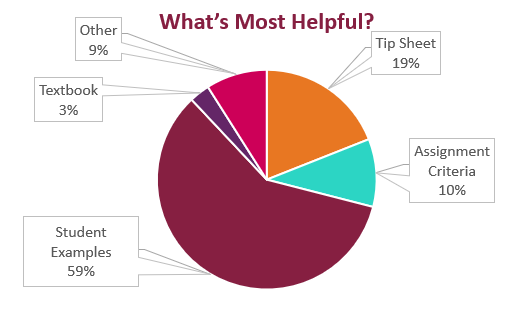

What’s Most Helpful?
In the Week 4 Check-In Survey, I asked which resources were most helpful as you worked on your Technical Descriptions. Here’s what you said:

Most of you (59%) said the Student Examples were the most helpful resource as you worked on your Technical Description assignment. 19% pointed to the Tip Sheets, another important resource you should be using.
Tip Sheets provide step-by-step details on what you need to write. They tell you exactly what information and document features to include as you write your assignment. The Tip Sheets are linked from each of the assignments and on the Tip Sheet Quick Links page.
Apply What You Know
Several technical writing practices were built into the Label Analysis assignment. As you revise your Technical Description and Instructions, take time to apply those same strategies:
- Take clear photos with no background distractions. As the textbook explains, “[E]xtraneous background clutter . . . can distract readers. Crop the photograph to delete unnecessary detail” (p. 337, print)
- Number and label your images. Numbering and labeling each image makes it easier for the reader to find the right image.
- Refer to your images in your text of your document. Connecting images and the text ensures readers sees why you included the images and how they support the information in the document.
Strong Description Titles

The textbook says that the title for your description should “clearly state the subject and indicate whether the description is general or particular.”
- General description: “Description of an Avocado”
- Particular description: “Description of a Ripe, Haas Avocado”
- General description: “A Cast Iron Skillet”
- Particular description: “A Lodge 5" Cast Iron Skillet”
- General description: “Description of Dark Chocolate Bar”
- Particular description: “Description of Ghirardelli Intense Dark 72% Cacao Chocolate Bar”
The example titles above show the most basic expectation. The title you use may be much more interesting. You can include a pun or additional information if you like. The first example, for instance, could also be titled, “What to Look for When Buying a Ripe Haas Avocado.”
Just be sure that you cover the basic expectations, and your title should be fine.
Your Working Titles
The most effective report titles are clear, specific, and direct. When someone reads your title, they should know exactly what they will get if they read the document.
Consider these examples and the related advice:
- Ice Cream Scoop—Here’s the Scoop!
- This title includes a fun pun (Scoop!). It may not be immediately obvious that the document will be a general technical description. Because the writer is going for a catchy vibe however, it’s fine.
- Understanding Your Farberware Pizza Cutter
- This is a particular description, focusing on a very specific pizza cutter. This title is fine.
- A Technical Analysis of a Spatula
- This title needs to be revised. The assignment is to write a technical description (not an analysis); so this title is misleading.
Check the Advice on Your Description Titles page for more suggestions on how to improve the titles submitted in the Week 4 Check-in Survey.
How Well Are You Keeping Up?
Here’s what everyone who turned in their Week 3 Check-In Survey said.

Sequence or Separate Steps?
Directions and instructions are everywhere, from gas pumps to microwave meals. IKEA instructions are famous for their line drawings with no words. Directions for technology can be impossibly difficult to follow.
As you work on the steps of your instructions assignment, you have to decide whether you will use a sequence or separate tasks.
Watch this LinkedIn Learning video on List Steps. The video is free with your VT login. Follow these instructions to login.